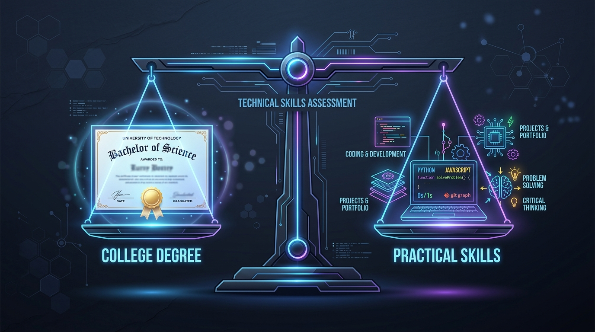
The "Degree vs. Skills" Reality Check: What College Students Need to Know
A real-world breakdown on why college degrees, CGPA cutoffs, and backlogs matter in campus placements, and how to balance academics with upskilling.
Short, practical, and in-depth breakdowns for software developers, engineers, and tech enthusiasts.

A real-world breakdown on why college degrees, CGPA cutoffs, and backlogs matter in campus placements, and how to balance academics with upskilling.
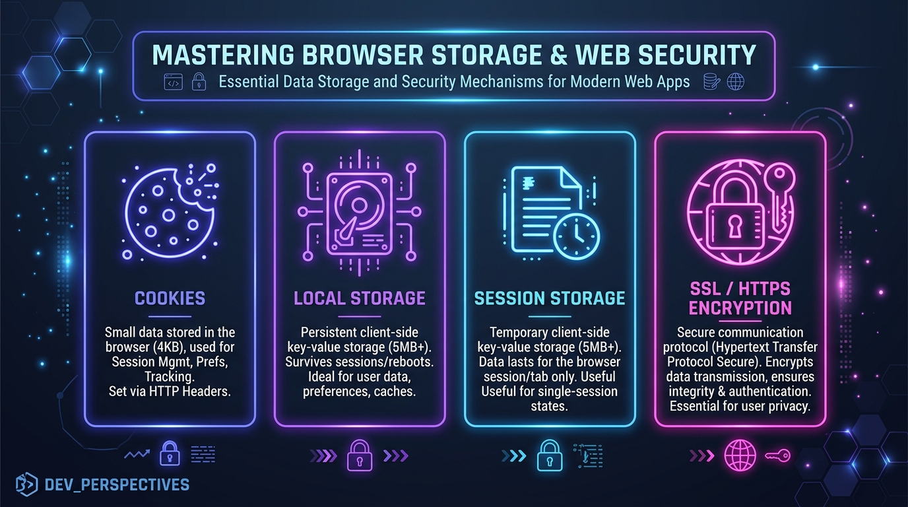
Exhaustive breakdown of Cookies, LocalStorage, IndexedDB, 4-step TLS 1.3 handshakes, security headers, and browser architecture.
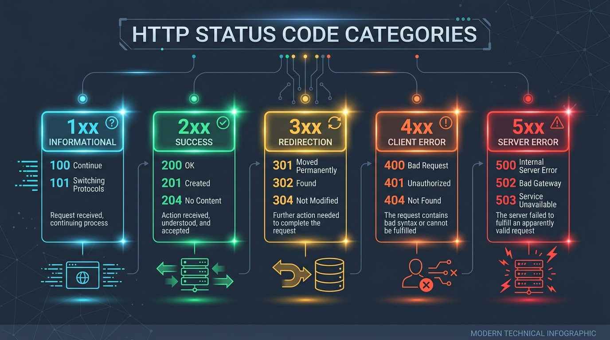
Deep dive into HTTP status codes, REST API response contracts, 401 vs 403 auth errors, 502 vs 504 gateway failures, and idempotent HTTP methods.
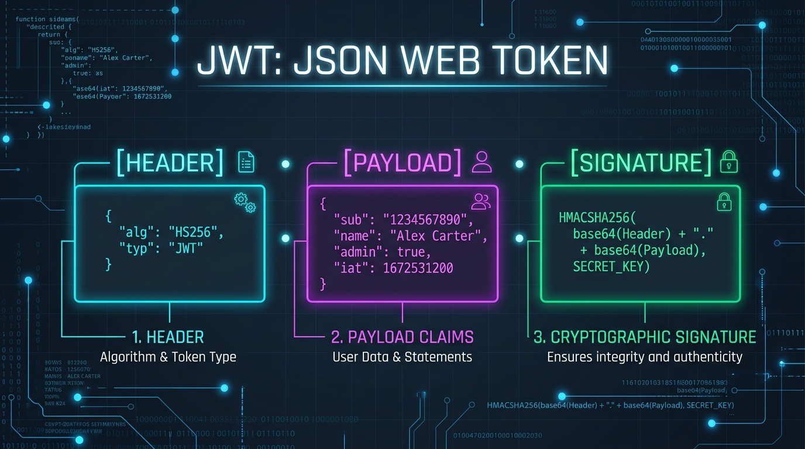
Deep dive into JSON Web Tokens (JWT), OAuth 2.0 grant types, RS256 vs HS256 signatures, PKCE security, and token tampering vulnerabilities.
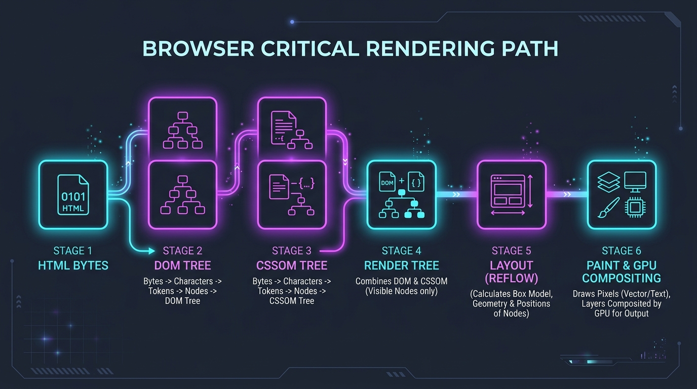
Deep dive into DOM, CSSOM, Render Tree, Layout Reflows, Repaints, GPU Compositing, and web performance optimization.
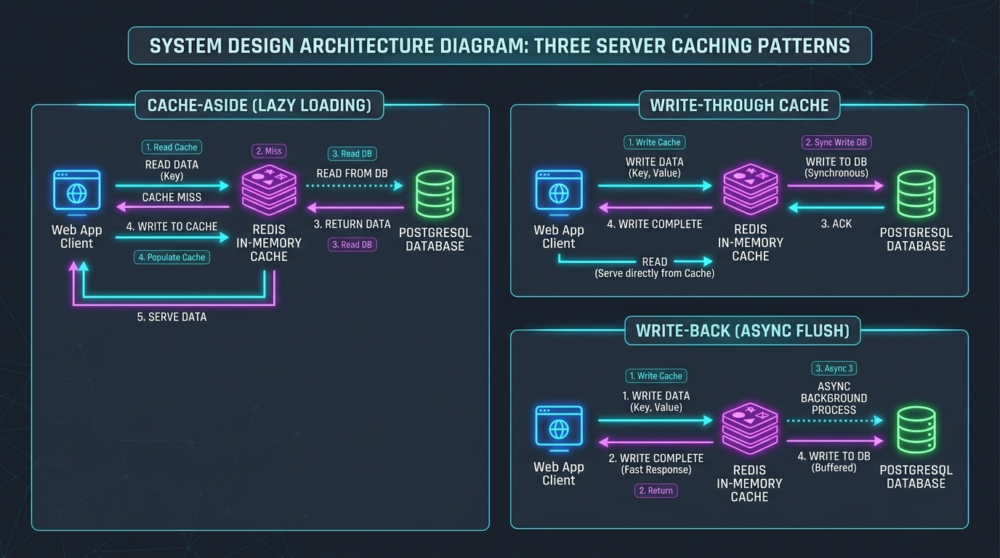
Master System Design caching patterns: Cache-Aside, Write-Through, Write-Back, LRU Eviction, Redis architecture, and CDN edge caching.
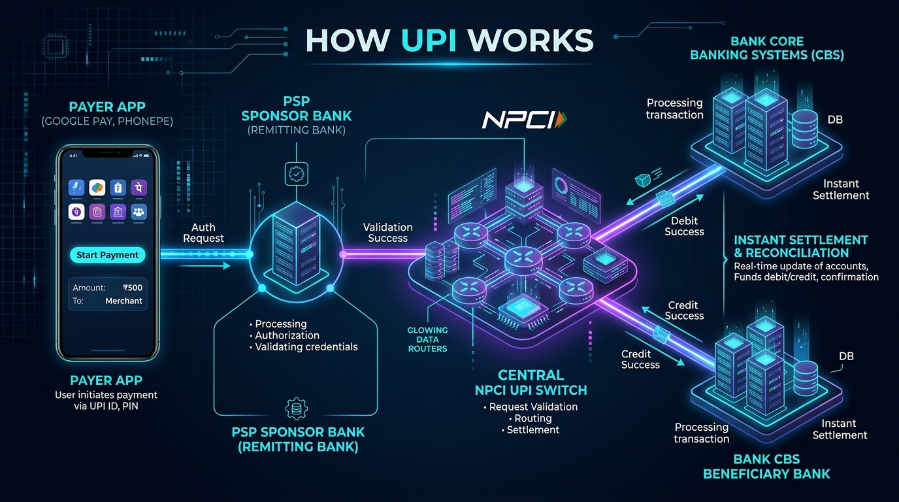
Master the UPI 4-party ecosystem, TPAPs vs Sponsor PSP Banks, VPA resolution, MPIN cryptographic security, and the 8-step instant transaction lifecycle.
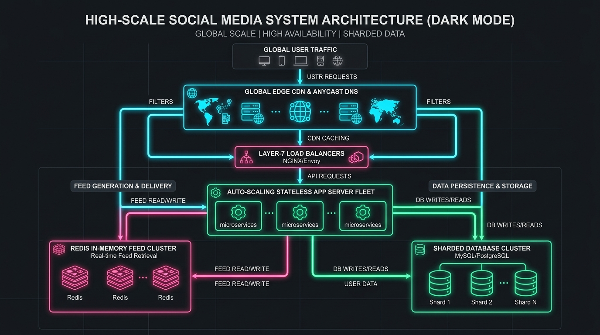
Master High-Concurrency System Design: Load Balancers, Fan-out on Write vs Read (The Celebrity Problem), DB Sharding, and Edge CDNs.
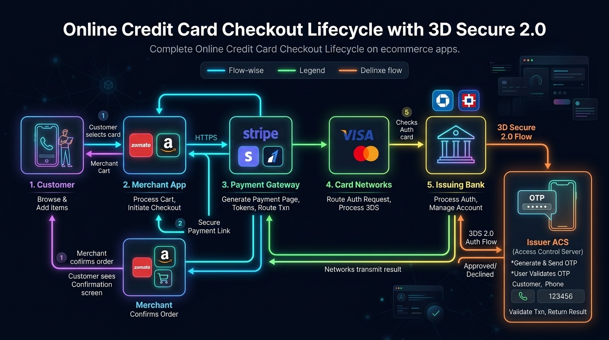
Deep dive into the online card checkout loop: Payment Gateways vs Aggregators, RBI Card Tokenization, 3D Secure 2.0, Webhook Idempotency, and T+1 Settlements.
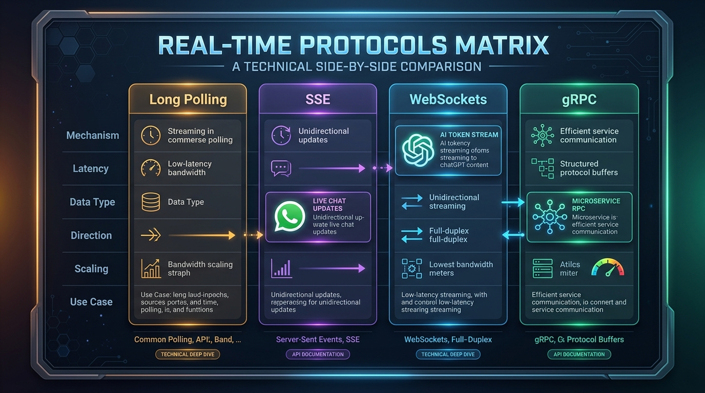
Understand real-time web protocols with simple analogies: WebSockets for 2-way live chat, SSE for AI streaming, Long Polling, and gRPC binary microservices.
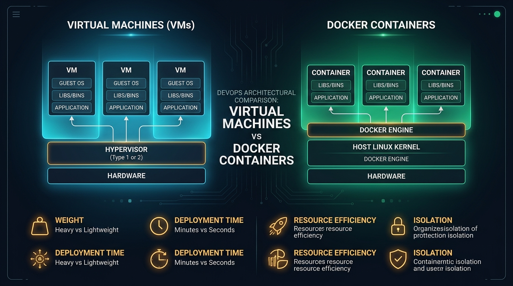
Learn why containers are NOT mini VMs: Hypervisors vs. Linux Namespaces, Control Groups (cgroups), and Copy-on-Write OverlayFS storage layers.
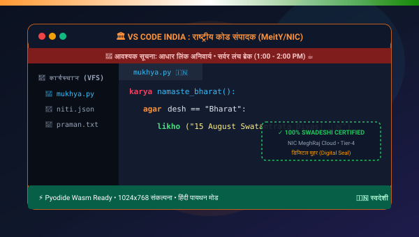
A humorous yet technically deep exploration of "Sarkari" UI archetypes, in-browser Pyodide WebAssembly Python execution, Shuddh Hindi transpiler, and sovereign IDE architecture.
Deep dive into Netflix Open Connect CDN architecture: AWS Control Plane vs Data Plane, custom FreeBSD Open Connect Appliances (OCAs), DASH/HLS chunking, and 3 AM predictive pre-warming.